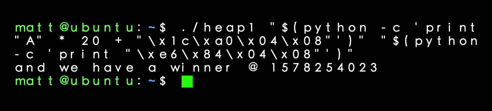

Protostar Exploit Exercises
The Protostar virtual machine is available for download here at https://www.vulnhub.com.
The source code for all of the exercises are availabe at https://exploit-exercises.lains.space.
Heap 0
In this program there are two functions: winner() and nowinner(). To call winner(), the following lines of code are critical:
- d = malloc(sizeof(struct data));
- f = malloc(sizeof(struct fp));
- f->fp = nowinner;
The malloc() function allocates memory based on what is passed into it. It will return an address to where that memory starts on the heap. So d (which is a pointer) will contain an address on the heap that is the beginning of the struct data. Next, f is also assigned an address on the heap. The third line assigns the nowinner() function to the fp function pointer. This is just assigning nowinner() to the function pointer, it is not calling it yet. The function pointer nows points to nowinner(). So if we just run the program normally, then the nowinner() function will be called every time. The final command: ./heap0 $(python -c 'print "A" * 80 + "\x64\x84\x04\x08"')
Heap 0 Solution
This program uses the strcpy() function with no byte check. I'm able to overwrite and spill into the function pointer in the next line as shown above. The big clue was the program giving us the location of the struct data and the fp function pointer. They are 80 bytes apart on the heap. If the program didn't give us this clue, I still could have set a breakpoint after each call to malloc() in GDB and written down the return values.
Heap 1
Again, the goal of this exercise to call winner(). With the four calls to malloc(), my first instinct is to breakpoint after the second call to strcpy() and examine where everything is laid out on the heap. I run the program with: ./heap1 AAAAAAAA BBBBBBBB and in the debugger I use the command: x/20xw 0x804b160 to get the layout below:
Above I can see the variables i1->priority and i2->priority set to 1 and 2. Next, I can see the addresses returned from malloc(), 0x0804b170and 0x0804b190, they point to our arguments " AAAAAAAA" and "BBBBBBBB" respectively. With my first argument I can overwrite the pointer to the second argument with a different address. Then with the second argument I can write whatever I want to that specific address. How does this help me call winner()? Since I'm able write to any address, I'm going to trick the program into calling winner() instead of printf() which is just below the calls to strcpy(). How do you get a libc function to call something else?
Overwriting PLT
Below is the PLT entry for puts(). The compiler turns printf() into puts() for optimization. The way this binary was compiled the GOT address has already been resolved to 0x804a01c. So, whenever printf() gets called, the program will go to this address to run puts().
I'm going to overwrite the pointer to our second argument with 0x804a01c, which normall points to an address in the Global Offset Table. However, since I'm able to write whatever I want to that address, I'm going to write the address of the winner() function with the command: ./heap1 "$(python -c 'print "A" * 20 + "\x1c\xa0\x04\x08"')" "$(python -c 'print "\xe6\x84\x04\x08"')"
Heap 1 Solution
For more information on the PLT and dynamic linking, I highly suggest the following video: https://archive.org/details/LoB2013D2P28. It's presented by Xeno Kovah, a security-engineer at Apple who teaches classes on low-level security. I've taken the x86-64 and Life of Binaries courses and both are remarkable in the quality of material they provide.